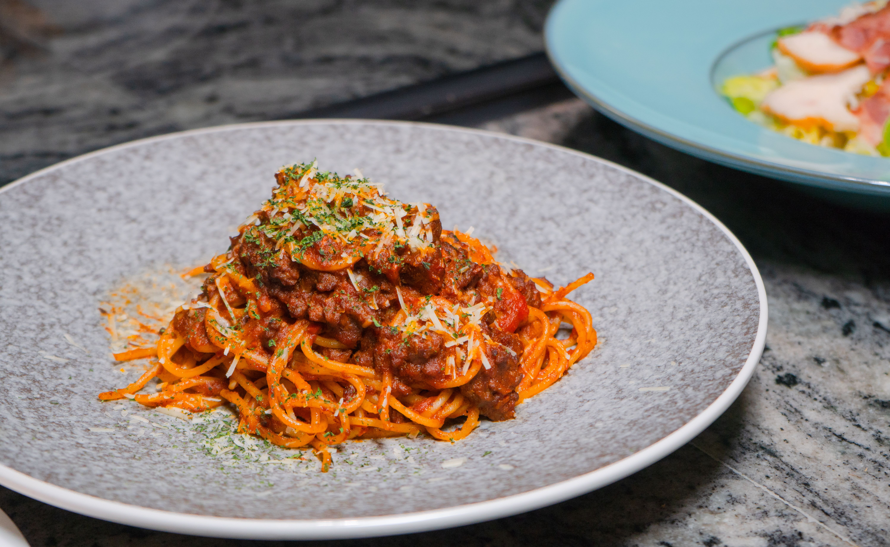

Ragu Pasta

Description
Ragu is a rich, slow-cooked Italian meat sauce from Bologna. Ground beef and pork simmer for hours with tomatoes, wine, and a base of onion, carrot, and celery until the sauce turns thick, deep, and flavorful.
It's traditionally served over wide, flat pasta like tagliatelle or pappardelle, which holds the hearty sauce well. It takes time, but most of it is hands-off, and it makes a perfect weekend dinner.
- 2 tablespoons olive oil
- 1 onion, finely chopped
- 1 carrot, finely chopped
- 1 celery stalk, finely chopped
- 2 cloves garlic, minced
- 1/2 lb ground beef
- 1/2 lb ground pork
- 1 cup dry red wine
<1i>1 can (28 oz) crushed tomatoes
- 2 tablspoons tomato paste
- 1/2 cup milk
- Salt and pepper to taste
- 1 lb tagliatelle or pappardelle
- Grated Parmesan, for serving
- Heat the olive oil in a large pot over medium heat.
- Add the onion, carrot, and celery and cook for about 8 minutes, until soft.
- Add the garlic and cook for 1 more minute.
- Add the beef and pork, breaking them up, and cook until browned.
- Pour in the wine and simmer until it mostly cooks off.
- Stir in the crushed tomatoes, tomato paste, and milk. Season with salt and pepper.
- Lower the heat and simmer, partly covered, for 2 to 3 hours, stirring now and then.
- Cook the pasta in salted boiling water until al dente, then drain.
- Toss the pasta with the sauce and serve topped with Parmesean
Homepage